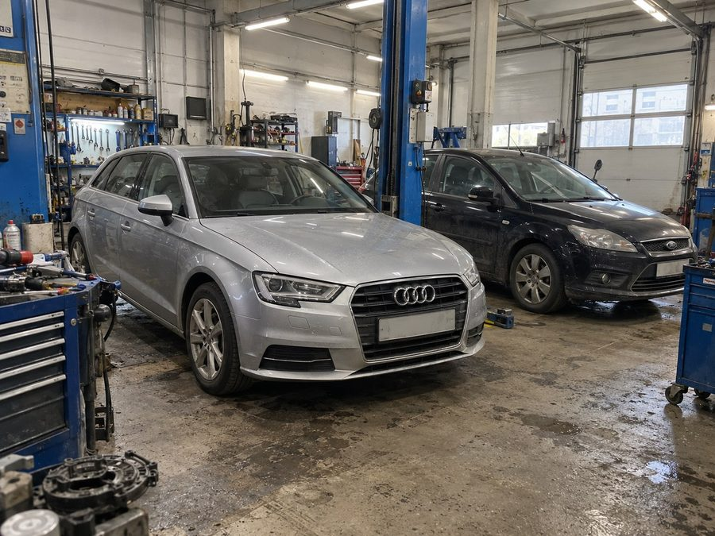
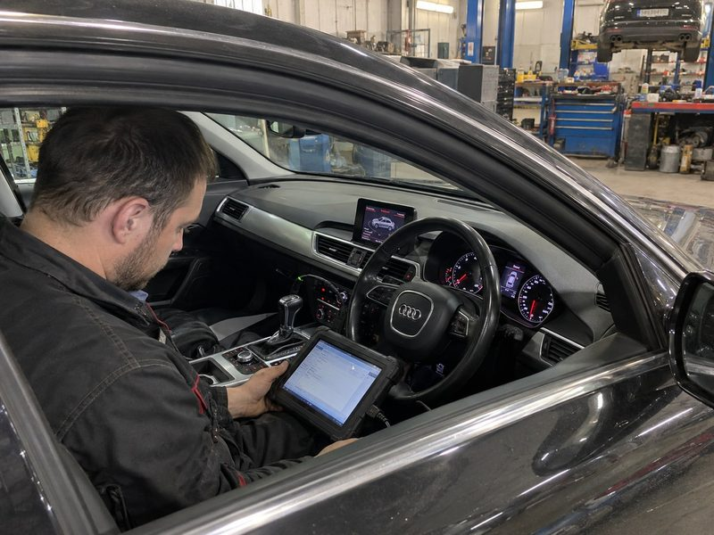

DSG · S-Tronic · PowerShift
Ремонт коробки
по марке авто
Начните с вашего автомобиля. Марка, модель, год и двигатель помогут уточнить коробку и порядок проверки — индекс агрегата знать необязательно.

Потом обсудим ремонт.
Ремонт DSG и S-Tronic
для вашей марки.
Выберите марку и посмотрите соответствующую группу коробок. Уточним конкретный агрегат по данным вашего автомобиля.
Volkswagen
Polo · Golf · Passat · Tiguan · Touran
DQ200 · DQ250 · DQ381 · DQ500
Audi
A1 · A3 · A4 · A5 · Q3 · Q5 · TT
Поперечные DSG и продольные S-Tronic
Škoda
Octavia · Superb · Rapid · Kodiaq · Karoq
DQ200 · DQ250 · DQ381 · DQ500
SEAT
Leon · Ibiza · Ateca · Arona · Tarraco
DQ200 · DQ250 · DQ381
Одна модель автомобиля может комплектоваться разными коробками. Год, двигатель и комплектация помогут определить вашу.
Найдите PowerShift
для вашего Ford или Volvo.
Сухой DPS6 и мокрый MPS6 требуют разного подхода. Перед обсуждением работ уточним тип коробки и симптомы.
Ford
Focus · Fiesta · Mondeo · C-MAX · S-MAX
6DCT250 / DPS6 · 6DCT450 / MPS6
Volvo
S40 · V50 · C30 · S60 · V60
6DCT450 / MPS6
Не уверены, установлен ли PowerShift? Назовите модель и год — начнём с уточнения.

Начните с данных автомобиляДля первого разговора
не нужен технический индекс.
Расскажите о машине и о том, что изменилось в работе коробки. Мастер уточнит детали и объяснит следующий шаг.
- 01Марка и модель
Например, Volkswagen Golf или Ford Focus.
- 02Год и двигатель
Помогут уточнить возможную комплектацию.
- 03Симптомы
Рывки, вибрация, ошибка или задержка включения.
Начните с понятного плана
Узнайте, с какой проверки начать.
Решение о ремонте — за вами.
Обсудите автомобиль и симптомы с мастером. Состав работ и стоимость согласуем после диагностики, до ремонта.
Условия PowerShift — у мастера